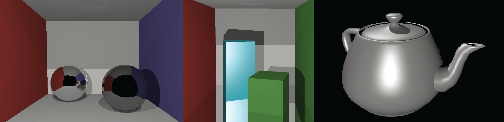

Whitted ray tracing using GPU acceleration

I implemented ray tracing entirely on a GPU based on Whitted’s algorithm, with the goal of rendering fully ray-traced scenes in real-time settings through a user interface. This project served as my undergraduate thesis. The implementation covers ray tracing for perfect light reflection and refraction, as outlined in the original paper. The algorithm is capable of reproducing light effects such as mirror reflection and diffuse reflection. Additionally, I implemented five Physically Based Rendering (PBR) materials using a design pattern based on the PBRT book. The implementation also includes linear transformations, scene loading, and real-time configuration. Users can explore and experiment with scenes, adjusting settings such as the number of bounces, light, and camera position.
Motivation
This project idea was born as an extension of a previous personal project, which involved a much simpler ray tracing implementation on the CPU. Around the time I was enrolled in the thesis course, I began learning the fundamentals of CUDA, understanding the workings of GPUs, and delving into the basics of rendering theory. I thought that it could be a good idea to apply all that new knowledge in practice by extending my previous project into a more advanced ray tracing implementation, this time on the GPU, and with a more organized codebase (ok, still a long way to go). The objective was to personally assess how scenes with hundreds of triangles could be rendered in just a couple of milliseconds, in contrast to my earlier CPU-based implementation.
Tools and dependencies
Programming languages
- C++
- CUDA-C++
Dependencies
- GLFW: Window and input management (keyboard and mouse)
- Dear ImGui: Graphical interface
- Glad: Loading OpenGL functions
- OpenGL: Displaying the rendered image continuously
- tinyobjloader: OBJ loader and triangulation
Features
These are the functionalities I have implemented in my application. Each subtitle briefly explains the concept and outlines the implementation:
Support for Wavefront .OBJ files and .MTL files
My raytracer supports the loading of .OBJ files, extracting vertex positions and vertex normals. Currently, texture mapping is not implemented, and therefore, texture coordinates loading is not supported yet. Additionally, it reads .MTL files, though in a customized format. I modified the illumination model illum parameter; so now the parameter ranges from 0 to 3. The models are as follows:
- 0: Mirror
- 1: Glass
- 2: Matte
- 3: Plastic
The application also supports the rendering of spheres. These primitives were initially used in the early stages of development to test all functionalities before implementing the Triangle primitive.
PBR Materials
The materials I implemented are listed in the table below, which also includes the BxDFs that compose each material. BxDF stands for a general form of the terms BRDF (Bidirectional Reflection Distribution Function) for specular reflection and BTDF (Bidirectional Transmission Distribution Function) for specular refraction. The implementation of this concept was based on Chapter 8 of the PBRT book. I followed the design pattern for the implementation of the BxDF base class, from which each specific BxDF was derived. In total, five BxDFs were implemented, and the materials are composed of one or more of these BxDFs. Specular reflection and Refraction implement the fresnel factor in conjunction with the Snell’s law for a more realistic output.
BxDFs:
| BxDF | Class name |
|---|---|
| Lambertian* | LambertianReflection |
| Phong* | PhongReflection |
| Blinn-Phong* | BlinnPhongReflection |
| Specular Reflection | SpecularReflection |
| Specular transmission/refraction | SpecularRefraction |
*Requires a normalization factor, these concepts were taken from [1], [2], [3].
Materials:
| Material | Class name | BxDF(s) composition |
|---|---|---|
| Matte | MatteMaterial | Lambertian |
| Glass | GlassMaterial | Specular Reflection & Refraction |
| Plastic | PlasticMaterial | Lambertian & Phong/Blinn-Phong |
| Mirror | MirrorMaterial | Specular Reflection |
Results
Some quantifiable results are listed in the table below. I used various variations of the Cornell Box scene for testing because the bounces of light are more noticeable in these scenes. Moreover, the Utah Teapot and the Stanford Bunny were also rendered. We noticed that the rendering resolution and the number of bounces greatly affect the rendering time. Additionally, my application renders objects with up to ~5k triangles while still maintaining an ‘interactive’ framerate, although at low resolutions. I made minor tweaks to the program, but the issue I found to have the most significant impact is the process of ‘naive’ intersection. This problem is better addressed using a spatial acceleration structure, which is part of a future step.
| Scene name | Resolution | FPS | Miliseconds (ms) |
|---|---|---|---|
| CornellBox-Original | 1024x576 | 80.3 | 12.45 |
| CornellBox-Sphere | 1024x576 | 3.1 | 321.101 |